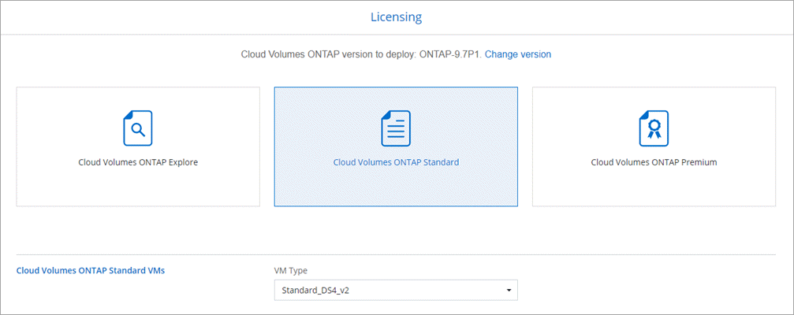

请求文档变更
请求文档变更 在 GitHub 上编辑
在 GitHub 上编辑 提供者指南
提供者指南在 Azure 中启动 Cloud Volumes ONTAP
提供者
您可以通过在 Cloud Manager 中创建 Cloud Volumes ONTAP 工作环境在 Azure 中启动单节点系统或 HA 对。
-
您应具有 "与工作空间关联的连接器"。

您必须是帐户管理员才能创建 Connector 。在创建首个 Cloud Volumes ONTAP 工作环境时，如果您还没有连接器，则 Cloud Manager 会提示您创建一个连接器。 -
您应已选择配置并从管理员处获取 Azure 网络信息。有关详细信息，请参见 "规划 Cloud Volumes ONTAP 配置"。
-
要部署 BYOL 系统，您需要每个节点的 20 位序列号（许可证密钥）。
当 Cloud Manager 在 Azure 中创建 Cloud Volumes ONTAP 系统时，它会创建多个 Azure 对象，例如资源组，网络接口和存储帐户。您可以在向导结束时查看资源摘要。

|
可能会丢失数据
由于存在数据丢失的风险，建议不要在现有共享资源组中部署 Cloud Volumes ONTAP 。尽管在使用 API 部署到现有资源组时回滚当前默认处于禁用状态，但删除 Cloud Volumes ONTAP 可能会从该共享组中删除其他资源。 最佳实践是为 Cloud Volumes ONTAP 使用新的专用资源组。这是从 Cloud Manager 在 Azure 中部署 Cloud Volumes ONTAP 时的默认选项，也是唯一建议的选项。 |
-
在工作环境页面上，单击 * 添加工作环境 * 并按照提示进行操作。
-
* 选择位置 * ：选择 * Microsoft Azure* 和 * Cloud Volumes ONTAP 单节点 * 或 * Cloud Volumes ONTAP 高可用性 * 。
-
* 详细信息和凭据 * ：可选择更改 Azure 凭据和订阅，指定集群名称和资源组名称，根据需要添加标记，然后指定凭据。
下表介绍了可能需要指导的字段：
字段 Description 工作环境名称
Cloud Manager 使用工作环境名称来命名 Cloud Volumes ONTAP 系统和 Azure 虚拟机。如果您选择了预定义安全组的前缀，则它还会使用该名称作为前缀。
资源组名称
保留新资源组的默认名称或取消选中 * 使用默认值 * 并为新资源组输入您自己的名称。最佳实践是为 Cloud Volumes ONTAP 使用新的专用资源组。虽然可以使用 API 在现有共享资源组中部署 Cloud Volumes ONTAP ，但由于存在数据丢失的风险，建议不要这样做。有关详细信息，请参见上述警告。
Tags
标记是 Azure 资源的元数据。在此字段中输入标记后， Cloud Manager 会将其添加到与 Cloud Volumes ONTAP 系统关联的资源组中。在创建工作环境时，最多可以从用户界面添加四个标签，然后可以在创建工作环境后添加更多标签。请注意，在创建工作环境时， API 不会将您限制为四个标记。有关标记的信息，请参见 "Microsoft Azure 文档：使用标记组织 Azure 资源"。
用户名和密码
这些是 Cloud Volumes ONTAP 集群管理员帐户的凭据。您可以使用这些凭据通过 OnCommand System Manager 或其 CLI 连接到 Cloud Volumes ONTAP 。
【视频】编辑凭据
您可以选择不同的 Azure 凭据和不同的 Azure 订阅以用于此 Cloud Volumes ONTAP 系统。您需要将 Azure Marketplace 订阅与选定 Azure 订阅关联，才能部署按需购买的 Cloud Volumes ONTAP 系统。 "了解如何添加凭据"。
以下视频显示了如何将 Marketplace 订阅与 Azure 订阅关联：
-
* 服务 * ：保持服务处于启用状态或禁用不想在 Cloud Volumes ONTAP 中使用的单个服务。
-
* 位置和连接 * ：选择一个位置和安全组，然后选中此复选框以确认 Cloud Manager 与目标位置之间的网络连接。
-
* 许可证和支持站点帐户 * ：指定是要使用按需购买还是 BYOL ，然后指定 NetApp 支持站点帐户。
要了解许可证的工作原理，请参见 "许可"。
对于按需购买， NetApp 支持站点帐户是可选的，但对于 BYOL 系统则是必需的。 "了解如何添加 NetApp 支持站点帐户"。
-
* 预配置的软件包 * ：查找其中一个软件包以快速部署 Cloud Volumes ONTAP 系统，或者单击 * 创建自己的配置 * 。
如果选择其中一个包、则只需指定卷、然后检查并批准配置。
-
* 许可 * ：根据需要更改 Cloud Volumes ONTAP 版本，选择许可证并选择虚拟机类型。

如果在启动系统后需要更改、您可以稍后修改许可证或虚拟机类型。
如果选定版本有较新的候选版本、一般可用性或修补程序版本可用、则在创建工作环境时， Cloud Manager 会将系统更新为该版本。例如，如果您选择 Cloud Volumes ONTAP 9.6 RC1 和 9.6 GA 可用，则会发生此更新。更新不会从一个版本更新到另一个版本，例如从 9.6 到 9.7 。 -
* 订阅 Azure Marketplace * ：如果 Cloud Manager 无法启用 Cloud Volumes ONTAP 的编程部署，请按照以下步骤操作。
-
* 底层存储资源 * ：选择初始聚合的设置：磁盘类型，每个磁盘的大小以及是否应启用到 Blob 存储的数据分层。
请注意以下事项：
-
磁盘类型用于初始卷。您可以为后续卷选择不同的磁盘类型。
-
磁盘大小适用于初始聚合中的所有磁盘以及使用 Simple Provisioning （简单配置）选项时 Cloud Manager 创建的任何其他聚合。您可以使用高级分配选项创建使用不同磁盘大小的聚合。
有关选择磁盘类型和大小的帮助，请参见 "在 Azure 中估算系统规模"。
-
您可以在创建或编辑卷时选择特定的卷分层策略。
-
如果禁用数据分层，则可以在后续聚合上启用它。
-
-
* 写入速度和 WORM* （仅限单节点系统）：选择 * 正常 * 或 * 高 * 写入速度，并根据需要激活一次写入，多次读取（ WORM ）存储。
仅单节点系统支持选择写入速度。
如果启用了数据分层，则无法启用 WORM 。
-
* 安全通信到存储和 WORM* （仅限 HA ）：选择是否启用与 Azure 存储帐户的 HTTPS 连接，并根据需要激活一次写入，多次读取（ WORM ）存储。
HTTPS 连接从 Cloud Volumes ONTAP 9.7 HA 对连接到 Azure 存储帐户。请注意，启用此选项可能会影响写入性能。创建工作环境后，您无法更改此设置。
-
* 创建卷 * ：输入新卷的详细信息或单击 * 跳过 * 。
本页中的某些字段是不言自明的。下表介绍了可能需要指导的字段：
字段 Description Size
您可以输入的最大大小在很大程度上取决于您是否启用精简配置、这样您就可以创建一个大于当前可用物理存储的卷。
访问控制（仅适用于 NFS ）
导出策略定义子网中可以访问卷的客户端。默认情况下， Cloud Manager 会输入一个值、用于访问子网中的所有实例。
权限和用户 / 组（仅限 CIFS ）
这些字段使您能够控制用户和组对共享的访问级别（也称为访问控制列表或 ACL ）。您可以指定本地或域 Windows 用户或组、 UNIX 用户或组。如果指定域 Windows 用户名，则必须使用 domain\username 格式包含用户的域。
快照策略
Snapshot 副本策略指定自动创建的 NetApp Snapshot 副本的频率和数量。NetApp Snapshot 副本是一个时间点文件系统映像、对性能没有影响、并且只需要极少的存储。您可以选择默认策略或无。您可以为瞬态数据选择无：例如， Microsoft SQL Server 的 tempdb 。
高级选项（仅适用于 NFS ）
为卷选择 NFS 版本： NFSv3 或 NFSv4 。
启动程序组和 IQN （仅适用于 iSCSI ）
iSCSI 存储目标称为 LUN （逻辑单元），并作为标准块设备提供给主机。启动程序组是包含 iSCSI 主机节点名称的表，用于控制哪些启动程序可以访问哪些 LUN 。iSCSI 目标通过标准以太网网络适配器（ NIC ），带软件启动程序的 TCP 卸载引擎（ TOE ）卡，融合网络适配器（ CNA ）或专用主机总线适配器（ HBA ）连接到网络，并通过 iSCSI 限定名称（ IQN ）进行标识。创建 iSCSI 卷时， Cloud Manager 会自动为您创建 LUN 。我们通过为每个卷仅创建一个 LUN 来简化此过程，因此无需进行管理。创建卷后， "使用 IQN 从主机连接到 LUN"。
下图显示了已填写 CIFS 协议的卷页面：

-
* CIFS 设置 * ：如果选择 CIFS 协议，请设置 CIFS 服务器。
字段 Description DNS 主 IP 地址和次 IP 地址
为 CIFS 服务器提供名称解析的 DNS 服务器的 IP 地址。列出的 DNS 服务器必须包含为 CIFS 服务器将加入的域定位 Active Directory LDAP 服务器和域控制器所需的服务位置记录（服务位置记录）。
要加入的 Active Directory 域
您希望 CIFS 服务器加入的 Active Directory （ AD ）域的 FQDN 。
授权加入域的凭据
具有足够权限将计算机添加到 AD 域中指定组织单位 (OU) 的 Windows 帐户的名称和密码。
CIFS server NetBIOS name
在 AD 域中唯一的 CIFS 服务器名称。
组织单位
AD 域中要与 CIFS 服务器关联的组织单元。默认值为 cn = computers 。要将 Azure AD 域服务配置为 Cloud Volumes ONTAP 的 AD 服务器，应在此字段中输入 * OU=ADDC Computers * 或 * OU=ADDC Users* 。https://docs.microsoft.com/en-us/azure/active-directory-domain-services/create-ou["Azure 文档：在 Azure AD 域服务托管域中创建组织单位（ OU ）"^]
DNS 域
Cloud Volumes ONTAP Storage Virtual Machine （ SVM ）的 DNS 域。在大多数情况下，域与 AD 域相同。
NTP 服务器
选择 * 使用 Active Directory 域 * 以使用 Active Directory DNS 配置 NTP 服务器。如果需要使用其他地址配置 NTP 服务器，则应使用 API 。请参见 "Cloud Manager API 开发人员指南" 了解详细信息。
-
* 使用情况配置文件，磁盘类型和分层策略 * ：选择是否要启用存储效率功能，并根据需要更改卷分层策略。
有关详细信息，请参见 "了解卷使用情况配置文件" 和 "数据分层概述"。
-
* 审核并批准 * ：审核并确认您的选择。
-
查看有关配置的详细信息。
-
单击 * 更多信息 * 以查看有关支持和 Cloud Manager 将购买的 Azure 资源的详细信息。
-
选中 * 我了解 …* 复选框。
-
单击 * 执行 * 。
-
Cloud Manager 部署了 Cloud Volumes ONTAP 系统。您可以跟踪时间链中的进度。
如果您在部署 Cloud Volumes ONTAP 系统时遇到任何问题、请查看故障消息。您也可以选择工作环境并单击 * 重新创建环境 * 。
要获得更多帮助，请转至 "NetApp Cloud Volumes ONTAP 支持"。
-
如果配置了 CIFS 共享、请授予用户或组对文件和文件夹的权限、并验证这些用户是否可以访问该共享并创建文件。
-
如果要对卷应用配额、请使用 System Manager 或 CLI 。
配额允许您限制或跟踪用户、组或 qtree 使用的磁盘空间和文件数量。